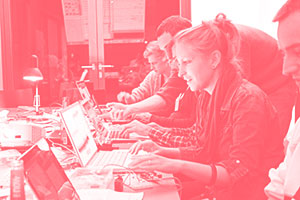
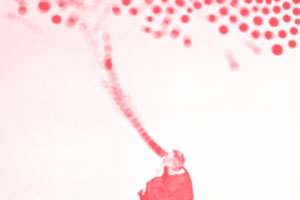
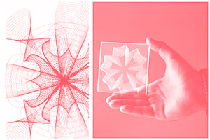
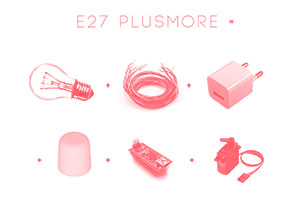
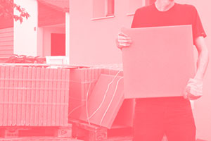

retune.13
creative technology conference
about
about retune
Around the world new technologies and new means of production and distribution enable unprecedented innovation and creative expression; while the sharing, forking and remixing of knowledge blend traditional fields in a way that informs and inspires new questions, theories and methods.
The retune.13 - creative technology conference is a gathering of artists, scientists, designers, hackers and entrepreneurs who are engaged in these developments, and looking to exchange their ideas and questions on new ways of working, thinking and expressing with technology.
retune.13 takes place from Sept 27 – 29 2013 in Berlin. It is a single-track conference of hand-picked workshops and talks, with limited participants, and generous time for discussing and connecting.
about the team
retune.13 is hosted by Sonice Development – a Berlin based group of artists and inventors whose work is focused on drawing-machines and interactive installations.
Organizer: Julian Adenauer
Co-organizers: Marguerite Joly and Lu Nelson
Graphics: Carsten Giese, Studio Regular
archive retune – 2011, 2012
2012 • The first retune conference took place from 26.–28.10.2012 at the TAK in Planet Modulor. The conference was organized by Stefan Canditt (Formulor) and Julian Adenauer (Sonice Development). [visit website]
2011 • Ancestor of the retune conference is the "Create. Art and Technology" event that was organized by Stefan Canditt (Formulor) and Anton Mezhiborskiy (Tinkersoup) and took place in November 2011. [visit website]
venue
the wye
Skalitzer Str. 86
10997 Berlinthewye.de
[more]
tickets
Tickets are limited to 200 pieces and start at 49€. [more details]
Like retune on facebook. Also go ahead and join the facebook event.
we also have a twitter account: @retuneberlin
and there is also an official hashtag for this year's conference: #retune13
newsletter
sign for our newsletter to get all the freshest news about retune directly to your inbox:
speakers
speakers 2013
James Auger
James Auger is a designer, researcher and lecturer operating at the intersection of art and industrial design. He is a tutor at the RCA: Design Interactions and visiting professor at the Haute école d'art et de design (HEAD) in Geneva. Together with Jimmy Loizeau, James runs Auger-Loizeau - design studio based in London, and they have been collaborating on projects since the concept of the Audio Tooth Implant which was first conceived in October 2000.
[Industrial] Design is mostly concerned with the process of bringing products to market, making them desirable and therefore saleable. With a slight sideways step, Auger-Loizeau believes that by removing the commercial aspect from the requirements of the object, ID it can adopt a whole different agenda, questioning the process that gives birth to it rather than blindly conforming to it. In this way design can comment on consumer culture, the role of products and the ubiquity and function of technology. It becomes a tool for questioning rather than problem solving. Through the development and dissemination of speculative and critical products and services they hope to instigate a broader analysis of what it means to exist in a technology rich environment both today and in the near future.
Their goal is for this analysis to take place over a broad a spectrum. Thus their work may be seen anywhere from Wired magazine to The Sun newspaper, or as a demo in a public square in Linz to an exhibition in Beijing. Many of their projects are self-generated and self-funded but they also participate in industry funded research projects, commissions, workshops and the very occasional commercial project.
Jeremy Bailey
"Jeremy Bailey is a Toronto-based Famous New Media Artist whose work explores custom software in a performative context. His work is often confidently self-deprecating in offering hilarious parodies of new media vocabularies." (Marisa Olson, Rhizome) Recent projects include performances for Rhizome's Seven on Seven, Transmediale, the Stedelijk Museum, FACT, the Tate Liverpool and the New Museum in New York.
Alper Çuğun
Alper Çuğun M.Sc. is a designer, developer and publicist active on the focal point of technology, design and society. After graduating from Delft University of Technology, he has been active in the Amsterdam startup scene. Having built up an extensive network there, he moved to Berlin.
Alper currently is partner at Hubbub, one of Europe’s leading studios for the design of games and playful systems. Hubbub helps organizations with understanding and inventing new games and playful systems, primarily in the space of social issues, creativity and collaboration.
Alper is also on the board of the Open State Foundation, where he oversees the creation of open data and open government policy for the Netherlands and the rest of Europe.
Scott deLahunta
Scott deLahunta has worked as writer, researcher and organiser on a range of international projects bringing performing arts with a focus on choreography into conjunction with other disciplines and practices. He is currently Senior Research Fellow Coventry University/ R-Research Director, Wayne McGregor|Random Dance and Project Leader Motion Bank/ The Forsythe Company.
Photo by Thomas Lenden
Louisa Heinrich
Louisa Heinrich is relentlessly curious. She loves getting inside clients’ heads to understand the challenges they face. She also loves listening to and telling stories, to understand how people and the world work. Building on roots in Theatre and Anthropology, Louisa has been working in digital for over 16 years. She has recently founded a new company, Superhuman Ltd., on an ongoing quest to put people first, and investigate how technology can adapt to and enhance what makes us uniquely human. She has helped scores of businesses across finance, telecommunications, consumer goods, retail, media and government with Strategy, Innovation, Service Design and User Experience. Most recently, Louisa was Group Director of Strategy at Fjord, where she was responsible for driving thought leadership, exploring future trends, redesigning the agency, and generally stirring things up. She now works as a speaker, consultant and mentor at the intersection of Design, Business and Technology.
Franziska Hübler
Franziska Hübler’s main interest lies at the intersection of art and technology. Personal projects include soft sensors, sculpture and mixed reality installations. Parallel to her own work she is a Professor of Computergestütztes Experiment at the Hochschule für Angewandte Wissenschaften – Hamburg. Her collaborative course work (with students) has been exhibited at the Bucerius Kunst Forum Hamburg, Bauhaus Museum Berlin and at the Fabrik der Künste in Hamburg.
Peter Kirn
Peter Kirn is an audiovisual artist, journalist, and technologist. Classically trained in composition and piano, he now focuses on live electronic performance. He is the founder of CDM (createdigitalmusic.com), a widely-read daily site that explores creative technology, and has contributed to Macworld, Popular Science, De:Bug, Keyboard, and others. He teaches and develops open creative tools, including co-creating the open source MeeBlip synthesizer. Born in Kentucky, he is now based in Berlin.
He is a PhD Candidate in Music Composition at The City University of New York Graduate Center.
Olof Mathé
Olof Mathé is a hacker, artist, and proponent of the intrinsic beauty of technology and our ability to write poetry with it. Together with a bunch of deep computer heads and professional pranksters he started Art Hack Day in 2011, an event for hackers whose medium is art and artists whose medium is tech. Art Hack Day has partnered with 319 Scholes in Brooklyn, Bonniers Konsthall in Stockholm, Harvard Innovation Lab in Boston, GAFFTA in San Francisco and now LEAP / transmediale in Berlin this Sept 26-28. The event champions radical collaboration and its ability to foster expressiveness. When he's not co-creating art he builds tools for interactive storytelling at Inkling.
Photo: CATGOD by Reed + Rader
Kyle McDonald
Kyle McDonald is a media artist who works with code, with a background in philosophy and computer science. He creates intricate systems with playful realizations, sharing his source and challenging others to create and contribute. Kyle is a regular collaborator on arts-engineering initiatives such as openFrameworks, having developed a number of extensions which provide connectivity to powerful image processing and computer vision libraries. For the past few years, Kyle has applied these techniques to problems in 3D sensing, for interaction and visualization, starting with structured light techniques, and later using the Kinect.
Kyle's work ranges from hyper-formal glitch experiments to tactical and interrogative installations and performance. He has been Guest Researcher in residence at the Yamaguchi Center for Arts and Media, Japan; a fellow at the STUDIO for Creative Inquiry at Carnegie Mellon University; and is currently teaching at NYU's Interactive Telecommunications Program.
Nora O Murchú
Nora O Murchú is a curator and designer. She is currently a post-doctoral researcher at CRUMB, where her research explores experimental approaches to curating new media art and examines current economic, political and cultural factors that are shaping networked culture, and the artistic responses to them.
She received her PhD in 2012 from the University of Limerick. Her research examined online practices of open source users and provides an in-depth analysis of this practice for an Interaction Design context. In addition she suggests curation as a research method for Interactions designers, and provides a detailed account of how this methodology can foster creative innovation for end-users to work as designers in the context of their everyday lives.
She has worked as a research associate for the Interaction Design Centre at the University of Limerick, and the Interaction Research Studio at Goldsmiths , where she has consulted on a broad range of topics, including open-ended design methods, health informatics, and web platforms. She was a researcher on the Tidy Street project, an EPSRC project between the Open University and Goldsmiths that examined the shared energy practices of a small community in Brighton, England.
She is the founder and creative director of Tweak – a digital art and electronic music festival that took place in Ireland from 2008 – 2010. She has produced exhibitions and events (www.openhere.data.ie) for Trinity College Dublin and has curated the work of Golan Levin, Casey Reas, FIELD, Anthony Antonellis, Daniel Miller, Gregory Chatonsky, Tristan Perich, and Benjamin Gaulon.
Fabian Mürmann
Fabian Mürmann is a digital tinkerer and generalist who likes to solve problems, make things easier and build (digital) products. He skipped university to get his hands dirty in the real world instead of learning how things could and should potentially work. Starting as a back end & front end developer in 1998, while expanding his skill-set to concept, product, UX, start-up and consulting work over time the companies that he worked for include adidas, etsy, readmill, Zeit Online, Nokia, Bertelsmann among other known and unknown companies in Germany and in New York. From 2004 until 2009 he also ran a social-networking. Currently working as creative technologist & product manager at an Innovation Lab by the DirectGroup Germany, a Bertelsmann division, where he is responsible for the development of prototypes.
Julian Oliver
Julian Oliver is a New Zealander, Critical Engineer and artist based in Berlin. His projects and the occasional paper have been presented at many museums, international electronic-art events and conferences, including the Tate Modern, Transmediale, Ars Electronica, FILE and the Japan Media Arts Festival. Julian’s work has received several awards, most notably a Golden Nica at Prix Ars Electronica 2011 for the project Newstweek.
Julian has given numerous workshops and master classes in software art, creative hacking, data forensics, computer networking, object-oriented programming for artists, augmented reality, virtual architecture, artistic game-development, information visualisation, UNIX/Linux and open source development practices worldwide. Julian is an advocate of Free and Open Source Software in education.
Articles about Julian’s work, or work he’s made with others, have appeared in many news channels. Among them are The BBC (UK), The Age (AU), El Pais (ES), Liberation (FR), The New York Times (US), La Vanguardia (ES), The Guardian Online (UK), Cosmopolitan (US), Wired (US and UK), Slashdot (US), Boing Boing (US), Computer World (World) and several television stations worldwide.
Sascha Pohflepp
Sascha Pohflepp is interested in science and technology and their myths and realities, how they are reflecting our hopes for transcendence and how they are shaping the reality of our world. He has worked with numerous artistic and scientific collaborators on projects ranging from the microcosm of synthetic biology to the macrocosm of space exploration.
Grants and Residencies include an EPSRC Knowledge Transfer grant in 2011 and residencies in the Synthetic Aesthetics project and at Art Center College Pasadena in 2010. In fall/winter 2013 Sascha Pohflepp will be artist-in-residence at Eyebeam, New York City.
Alan N. Shapiro
Alan Neil Shapiro (born April 23, 1956 in Brooklyn, New York) is a software developer, computer scientist, and author and translator in the field of contemporary cultural phenomena.
He is an interdisciplinary thinker who studied science-technology at MIT and philosophy-history-literature at Cornell University. He is the author of “Star Trek: Technologies of Disappearance” (Berlin: AVINUS Verlag, 2004), a leading work in science fiction studies and on the conception of futuristic technoscience. He is the editor and translator of ”The Technological Herbarium” by Gianna Maria Gatti (Berlin: AVINUS Verlag, 2010), a major study of art and technology. His book “Software of the Future: The Model Precedes the Real” will be published in German in 2013. He is a practicing software developer. Alan has worked as a consultant to many large companies in several European countries. He is working on projects like “Computer Science 2.0,” “The Car of the Future,” “The Library and Museum of the Future,” and robotics. At his website “Alan N. Shapiro, Technologist and Futurist” (www.alan-shapiro.com), he has already published more than 250 articles (by himself and others). He is recognised as one of the leading experts on the philosophy and cultural theory of Jean Baudrillard. He is currently starting a book project called “The Prisoner: Confinement and Freedom in the Global Village,” together with Nolan Bazinet and Nicole Maggio.
Mark Turrell
Mark Turrell is a strategist, entrepreneur, speaker and author. His background is in the theory and practice of collective intelligence, how to harness the power of the masses. His upcoming book, "Scaling", integrates emergence, networks and waves as a framework to help organizations achieve outsized growth for their ideas, products, and societal change. He was nominated by the World Economic Forum as both a Technology Pioneer and a Young Global Leader. He is a Canadian, with South African parents, educated in the UK, and now living in Berlin.
program
program 2013
friday – 27. SEP 2013
main hall
workshops
amazing workshops going on here!
have a look at the full workshop program over here.
doors open
welcome & introduction
Franziska Hübler
– »Connecting the Dots«
Alan Shapiro
– »Software Code as Hybrid of Productive and Creative«
lounge
coffee, refreshments, snacks
lunch
registration
saturday – 28. SEP 2013
main hall
Fabian Mürmann
– »A Rabbit chasing a Skunk. Or the other way around.«
Alper Çuğun
– »Designing Strange Loops«
coffee break
Julian Oliver
– »Art of the Exploit: Un-(Black)Boxing the World we live in«
James Auger
– »Speculative design and the Domestication of technology«
lunch break
Scott deLahunta
– »Publishing Choreographic Ideas«
Peter Kirn
– »Music, Openness, and the Spread of Ideas, from Folk Tune to GitHub«
coffee break
Kyle McDonald
– »How to Give Everything Away«
Panel Discussion
– »Are New Media Artists cheap r&d departments for advertising agencies?«
Jeremy Bailey, Tom Kelshaw, Kyle McDonald, Nora O'Murchú, Leah Stuhltrager
lounge
registration
coffee, refreshments, snacks
lunch
Art Hack Day
Party & vernissage @ LEAP
We're joining our friends from Art Hack Day Berlin for their closing exhibition, live performances, and after party! This will be amazing. More details here.
LEAP, Karl-Liebknecht-Str. 13, Berlin, S+U Alexanderplatz.
Via public transport from The Wye: Take U1 from Görlitzer Bahnhof (direction "Uhlandstr.") one station to Kottbusser Tor. Change to U8 (direction "Wittenau") and get off at Alexanderplatz. Here's a video how to find them.
sunday – 29. SEP 2013
main hall
Sascha Pohflepp
– »TECHNOLOGY FICTION AND THE AMERICAN REAL«
Nora O'Murchu
– »Exhibition as interface: experimental curatorial formats«
coffee break
Olof Mathé
– »Radical collaboration, public good and collateral damage«
Jeremy Bailey
– »Performance for the Internet«
lunch break
Louisa Heinrich
– »Indispensably Useless: the Value of Art«
Mark Turrell
– »A New Lens: Applying the Concepts of Spread and Scaling to Revolutionary Movements«
lounge
coffee, refreshments, snacks
lunch
Feedback & Goodbye
workshops
workshop info
This year the workshops will run on the first day (Friday, September 27), starting in the morning and running until the conference kicks off at 6pm. This means a concentrated time for learning and trying out new stuff, and you won't miss any of the talks.
The workshops are independently organized by the workshop leaders and the fees are not included in the conference tickets. The fee has to be paid on site. Spots are limited.
Sign up for your workshop here.
Arduino & Fritzing
Fritzing is an eco system consisting of tools, services and learning material helping interested people to realise creative electronic projects. Finished projects can be shown on our website to inspire people. The Fritzing Kits are collections of electronic parts and projects for beginners and advanced persons and our free available video tutorials are explaining the tools step by step. Furthermore projects can be transformed to real products by using our open source software Fritzing!
In this workshop, you will learn how easy it is to get started with electronics. Beginners will build their first interactive gadget, and more advanced tinkerers will learn how to evolve their inventions and turn them into professional PCBs.
| you need | – Your computer (in the best case with installed Arduino software – A Starter Kit with Arduino and parts. At the workshop, we will sell the Fritzing Creator Kit for 89 Euro (with german beginners book and voucher for the english one, LED-Matrix) and the Fritzing Starter Kit for 65 Euro. Preorders are possible via email: info@fritzing.org, subject: Retune Workshop. See the website for more details about the kits: shop.fritzing.org |
| fee | 30€, max. 20 participants |
| time | Sep 27th, 13:00 - 16:00 |
Computer Vision (booked out)
“Computer Vision” refers to a broad collection of techniques that allow computers to make intelligent assertions about what's going on in digital images and video. Thanks to recent advances in affordable vision technologies (such as Kinect, IR webcams, and Leap Motion), and armed with a slew of powerful but simple heuristics (tricks!) for extracting useful information from images -- a large number of artists have begun to explore the new possibilities for interaction made possible by cameras.
This hands-on workshop is oriented toward understanding and learning how to use visual pixel processing -- especially of bodies, faces and hands. It offers a practical introduction to computer vision techniques for creating interesting interactions in Processing (for novices) and OpenFrameworks (for intermediate students). Participants will learn about: direct pixel access and image manipulation; detecting and measuring motion; detecting the presence and location of people; and tracking objects and faces. These techniques are supported by intuitive, visually-oriented examples and code fragments written for popular arts-engineering toolkits — and a presentation that cuts through technical jargon to focus on what’s really useful for artists and designers.
The workshop is lead by Kyle McDonald.
| you need | Introductory/Novice participants (those with very little programming experience) should bring a laptop with a fresh installation of Processing. Intermediate participants (those with some prior experience in Processing) should also install OpenFrameworks and an appropriate development environment (for example, XCode or CodeBlocks) |
| fee | 20€; max. 12 participants |
| time | Sep 27th, 11:00 - 16:00 |
>> Sign up! WORKSHOP IS FULL
Digital Analog Surface (BOOKED OUT)
The aim of that workshop is to integrate both process and workflow of desktop-manufacturing into an interactive design process. We discuss the qualities of analogue and digital techniques by marrying the precision of computer-control with the imprecision of hands-on making, mess and mistakes. The workshop will explore digital and analogue methods of generating images and manipulating materials for art and design. Participants will learn to create code using ‘Processing’ (open source generative design software) to drive machinery such as computer numerical control (CNC) routers and/or laser machines. Image editing on our portable cnc milling machine with our own tools, according to the motto: "to drill, to plane, to cut, to scratch - where images are edited, splinters must fall". The fundamental principles of patterns will be explored and declined with the aim to translate graphical characteristics into material behavior. Basic principles of graphic design, like transformation, progression and permutation are serving as a starting point.
The Workshop is held by Prof. Steffi Hußlein, Robert Laux, Konrad, Malte and Benjamin
Interaction Design // Institut Industrial Design
University of Applied Sciences Magdeburg- Stendal, Germany
| you need | no previous coding knowledge is required, the course is open for all enthusiasts. you should bring your laptop – ideally with Processing installed. |
| fee | 15€, max. 10 participants |
| time | Sep 27th, 11:00 - 16:00 |
>> Sign up! WORKSHOP IS FULL
E27plusMore - The Digitally Enhanced Universal Light Bulb (booked out)
E27plusMore is a reverence to the classical Edison screw invented 1909 and used since then as the standard for light bulbs. Let’s take this ubiquitous E-27 screw and make an update to it:
In this 4-hour workshop the participants will first augment a classical light-bulb thread with an Arduino microcontroller, and then use this device as a breeding ground for their own miniature autoactive/reactive/interactive installation built onto it.
The workshop fee of 1909 Euro cents includes all the ingredients for building your own takeaway E27plusMore device:
+ E-27 threaded screw
+ Power adapter
+ Arduino Nano
+ Servo motor
+ Various plastic parts
We are looking forward to many bright applications to come…
The workshop will be held by Felix Hardmood Beck and Simon Schiessl.
Felix Hardmood Beck loves to find non-intentional use for technical equipment and wants to find the limits of technology to then cross those borders and design specific needs from it. He works as Art Director and Concept Designer for the design studio ART+COM. felix-beck.de
Simon Schiessl is an engineer and artist. With a strong background in physics, engineering, media sciences and art practice he has been active in the techno-art scene for several years, two of which he spend as a researcher at the MIT Media Lab in Cambridge/USA. signalfluss.de
| you need | additional parts, tools, and your computer |
| fee | 19.09€, max. 20 participants |
| time | Sep 27th, 12:00 - 16:00 |
>> Sign up! WORKSHOP IS FULL
Fifty Shades of Shaders
An introduction to shaders for creative coders and code enthusiasts. Learn how to harness the power of your GPU to create high quality 2D and 3D visuals realtime.
Shaders are a powerful instrument in a creative coder’s toolbox. Regardless, they often pass as some kind of impenetrable black magic. As you will learn over the course of the day, this reputation is mostly undeserved. The basics are really quite simple to grasp, provided you know where to start. VVVV, Touch Designer, Cinder and OpenFrameworks (just to mention a few) all support shaders to some extent so this is as portable of a knowledge as you can get. Since its 2.0 release, Processing also offers an easy implementation of GLSL shaders through the PShader class, courtesy of Andres Colubri.
The workshop is open to all coders with little to no previous knowledge of shaders. It will start with a quick introduction to the theory behind shaders and will then focus on hands-on tinkering and experiments in code. Participants will learn the basics of working with GLSL shaders to generate 2D and 3D visuals in real-time and the ability to integrate shaders easily in their own projects. We will use Processing.
The workshop is lead by Raphaël de Courville and Moco (Elektropastete)
| you need | your computer |
| fee | 37,59€ (because it's part of the fast inverse square root), max. 20 participants |
| time | Sep 27th, 12:00 - 16:00 |
vvvv - real world computing
Computer science is a very young and evolving topic in human history. Textual programming as it's commonly used today emerged from early machine languages and is clearly not the end of the story. In this workshop you will learn what comfort, development speed and freedom you will gain from using the visual realtime programming environment vvvv.
After a little theory we will dig into examples which demonstrate some of vvvv's magic powers. The topics may include (in random order):
- visual programming
- setting up a vvvv project
- video input and analysis
- kinect, leap
- 3d scenes
- shaders
- textual programming in vvvv
- connecting hardware and sensors
The workshop is held by Tebjan Halm and joreg, who are both core developers of vvvv.
| you need | - laptop with decent graphics card and windows operating system - vvvv (32-bit) with addonpack installed and working: vvvv.org - 3-button mouse (or die!) - if you like, some hardware you want to conenct to |
| fee | 15€, max. 20 participants |
| time | Sep 27th, 11:00 - 16:00 |
tickets
ticket info
An essential part of retune is the diverse audience. We like to see attendees from a variety of backgrounds and professional levels, so we aim to keep the ticket prices low in order that they not be an object to attending. This year we introduce a new ticket structure with three levels: student ticket, regular ticket and professional. Please see on the right for more information.
All tickets are for the full conference—there will be no day-passes this year.
workshops
This year the workshops will run on the first day (Friday, September 27), starting in the morning and running until the conference kicks off at 6pm. This means a concentrated time for learning and trying out new stuff, and you won't miss any of the talks.
The workshops are not included in the conference tickets. They will be paid on site directly to the workshop leaders.
Invoices
If you haven't purchased a ticket yet and want to have an invoice, use this ticketshop.
Of course you can also get a proper legal invoice for the tickets you have already purchased. Unfortunately our payment provider Paylogic does not have an automated solution for generating them at the moment. To keep things simple they will generate them in one go after the conference (or as soon as we have sold all the tickets).
student ticket
If you are a student, this ticket is for you. We were students ourselves, so we know how empty your purse is most of the time. This is why we offer you the tickets at the lowest price we can.
49€* + fees
* Make sure to bring your valid student card to the conference. Otherwise you will have to remargin.
regular ticket
You are not a student anymore, but you are either freelancing, starting your own thing right now or are in an otherwise precarious working situation. We've been there :)
69€ + fees
professional ticket
Congratulations, you made it! You've got a proper job or your own business is out of its first years.
99€ + fees
If you are a company, want to send a few of your employees, need invoices and/or want to pay on account, please get in touch: info at retune dot de
Ticketshop
Need a proper invoice or having problems with this embedded ticket shop? You can alternatively buy your tickets via tito.io. Prices over there include all fees over there (that's why they seem slightly more expensive at first).
ticket info
An essential part of retune is the diverse audience. We like to see attendees from a variety of backgrounds and professional levels, so we aim to keep the ticket prices low in order that they not be an object to attending. This year we introduce a new ticket structure with three levels: student ticket, regular ticket and professional. Please see on the right for more information.
All tickets are for the full conference—there will be no day-passes this year.
workshops
This year the workshops will run on the first day (Friday, September 27), starting in the morning and running until the conference kicks off at 6pm. This means a concentrated time for learning and trying out new stuff, and you won't miss any of the talks.
The workshops are not included in the conference tickets. They will be paid on site directly to the workshop leaders.
Invoices
If you haven't purchased a ticket yet and want to have an invoice, use this ticketshop.
Of course you can also get a proper legal invoice for the tickets you have already purchased. Unfortunately our payment provider Paylogic does not have an automated solution for generating them at the moment. To keep things simple they will generate them in one go after the conference (or as soon as we have sold all the tickets).
student ticket
If you are a student, this ticket is for you. We were students ourselves, so we know how empty your purse is most of the time. This is why we offer you the tickets at the lowest price we can.
49€* + fees
* Make sure to bring your valid student card to the conference. Otherwise you will have to remargin.
regular ticket
You are not a student anymore, but you are either freelancing, starting your own thing right now or are in an otherwise precarious working situation. We've been there :)
69€ + fees
professional ticket
Congratulations, you made it! You've got a proper job or your own business is out of its first years.
99€ + fees
If you are a company, want to send a few of your employees, need invoices and/or want to pay on account, please get in touch: info at retune dot de
Ticketshop
Need a proper invoice or having problems with this embedded ticket shop? You can alternatively buy your tickets via tito.io. Prices over there include all fees over there (that's why they seem slightly more expensive at first).
press
hello press
We're happy that you are interested in reporting about retune.13. If you have further questions, we're happy to help you. Just get in touch: press / at / retune.de
materials
Press release: english / deutsch
Fotos from last year's conference, images from the speakers and our logo can be found here.
social media
If you're talking about us in your social media channels, it would be great if you link our accounts and use our hashtag #retune13
facebook: https://www.facebook.com/retuneconference
twitter: @retuneberlin
accreditation
Please get in touch if you want to come to the conference and write an article about it: press / at / retune.de
Please note that retune is run on a tight budget to keep ticket prices as affordable as possible, thus we only accept a very limited number of press accreditation.
imprint
Accountability
Accountability for the internet page retune.de and the is:
Sonice Development GmbH
Adalbertstr. 32
10179 Berlin
Board of Management: Michael Sebastian Haas
Email address: michael.haas {at} sonicedevelopment.com
Registrations: Registergericht Berlin, Amtsgericht Charlottenburg, HBR 123876
VAT ID No: DE269748210
Tax number: 37/419/22104
This imprint is also valid for our Facebook page.
Legal Note Sonice Development GmbH
© Copyright: All rights reserved. Text, images, graphics, sound, animations and videos as well as the arrangement of the same on retune.de websites are protected by copyright and other commercial protective rights. The content of these web sites may not be copied, disseminated, altered or made accessible to third parties for commercial purposes. Some retune.de websites also contain pictures subject to third party copyrights.
Liability for site content
This web site was compiled with the utmost care. Nonetheless, the accuracy or precision of its contents cannot be guaranteed. Any liability for damage resulting directly or indirectly from use of this website is precluded, unless caused intentionally or in gross negligence by Sonice Development GmbH.
License Note
The intellectual property contained in the retune.de website, e.g. patents, marks and copyrights, is protected. This website does not grant a license for the use of intellectual property of the Sonice Development GmbH or third parties.
Legal Note
We thank you for visiting our website and for your interest in our products. All personal data compiled on this website are processed and stored. Sonice Development GmbH assures that your information will be treated confidentially in accordance with the valid legal data protection stipulations.
Privacy Statement Sonice Development GmbH
Sonice Development GmbH appreciates your interest in its products and your visit to this website. Sonice Development GmbH respects your Privacy. The protection of your privacy in the processing of your personal data is an important concern to which we pay special attention during our business processes. Personal data collected during visits to our websites are processed by us confidentially and according to the legal provisions. Data protection and information security are part of our company policy. This websites may include links to other websites which are not covered by this privacy statement.
Collection and Processing of Personal Data
When you visit our websites, our web server automatically records the name of your internet service provider, the website from which you visit us, the pages on our site you visit and the date and length of your visit. Sonice Development GmbH may use cookies and active components (e.g. JavaScript) to follow the preferences of our visitors and optimize our website accordingly. You can reset your browser either to notify you when you receive a cookie, or to refuse to accept cookies. Please note that certain areas of most sites may not function properly if you reject a cookie. Additional personal data is only stored if volunteered by you, for example in context of a registration, survey, contest or in execution of a contract.
Use and Disclosure of Personal Data and Purpose Specification
Sonice Development GmbH will use your personal data for the sole purpose of technical administration of the website, customer administration, product surveys and marketing, only to the extent necessary in each specific case. Your personal data will not be disclosed to third parties outside Sonice Development GmbH without your consent.
External Service Providers
Ticket sales are handled by Paylogic Deutschland GmbH. Their privacy statements can be found here:
http://paylogic.de/de/disclaimer
Security
Sonice Development GmbH uses security measures in order to protect the data we have under our control against manipulation, loss, destruction, access by unauthorized persons or against unauthorized disclosure. Our security procedures are continually enhanced as new technology becomes available.
Freedom of choice
We would like to use your data to inform you about our products and services and request your opinion, where applicable. Naturally your participation in such campaigns is voluntary. Should you not consent, you can inform us at any time, so that we can prohibit the use of your data accordingly. For further information we refer you to the local website-services.
Contact
For information, helpful suggestions, or complaints regarding processing of your personal data you can refer to our Chief Data Protection Officer. Should any data be incorrect despite our efforts to ensure that the site be accurate and up-to-date, we will correct that information at your request.
Sonice Development GmbH
Julian Adenauer
Adalbertstr. 32
10179 Berlin